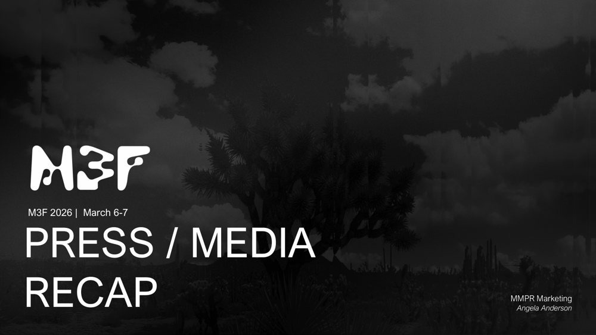

01 / Festival publicity · Media management
M3F Music Festival
Managed media relations and press announcements for M3F 2026, developing targeted outreach around the festival’s evolving music lineup and immersive stage design. Coordinated local influencer and business partnerships to connect the festival with younger Valley audiences. The media recap documents editorial highlights, three FOX10 live on-location segments, ABC15 broadcast coverage and influencer collaborations.
The campaign emphasized local, music, festival and event coverage. Television was not actively pitched at the client’s request; broadcast interest followed initial announcements.